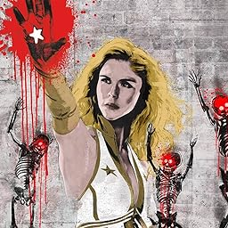

Conoce a "The Boys"
Billy Butcher
Billy Butcher es un ex agente de la CIA y el líder de The Boys, un grupo de vigilantes patrocinados por la CIA (que consta de Wee Hughie, Leche materna, Frenchie, y Kimiko) que observan, registran y, a veces, liquidan a "Supers",creados artificialmente por la mega-conglomeración Vought-American. Busca vengarse de Homelander, a quien culpa por la violación y muerte de su esposa Becky, y de todos los supers por las acciones atroces que estos cometieron.
Frenchie
Aficionado a las drogas, traficante de armas y chico para todo, el conjunto de habilidades de Frenchie es un recurso incalculable para Butcher y Los Muchachos; no obstante, sus decisiones impulsivas son una constante fuente de preocupaciones para Leche Materna.
Hughie
Es un tipo apacible con un trabajo aburrido y que vive con su padre. Robin, su gran amor, es la única luz que tiene en su vida. Así era su existencia hasta el día en que un superhéroe llamado A-Train atravesó a Robin y la mató del impacto. Desesperado, Hughie contrató los servicios del justiciero Billy Butcher. Viendose ahora envuelto en una lucha contra super heroes nefastos.
Kimiko
Kimiko es una mujer con poderes superhumanos, víctima de experimentos crueles, que fue encontrada por los muchachos enjaulada en un sotano de maxima seguridad. Ella decide unirse a "The Boys" para desentrañar su pasado y combatir a los super y a la empresa corrupta Vought.
Leche Materna
Leche Materna decidió dejar a "The Boys" para tener una vida apacible y hogareña con su familia. Pero Butcher sabe que no puede combatir a los supers sin las habilidades metodicas de leche materna, convenciendolo de que vuelva a unirse.
Conoce a Los 7:

Homelander
Con aspecto de estrella de cine y los poderes de un dios, Homelander es el mejor de los superhéroes existentes y el líder de The Seven. Además de volar, tiene una fuerza sobrehumana y un oído portentoso. Su visión de rayos X puede traspasar prácticamente cualquier material y destruirlo con la precisión de un láser. Aparentemente es una persona amable, sincera y modesta, siempre dispuesto a ayudar, todo un patriota norteamericano temeroso de Dios. Pero al igual que los simples mortales, los superhéroes tienen secretos.
Queen Meave
Guerrera, feminista, luchadora de causas humanitarias e integrante de The Seven, Queen Maeve es el modelo para las jóvenes de todo el planeta. Sin embargo, para llegar a donde está, ha tenido que esforzarse muchísimo. Para encarnar la imagen exigida por Vought, tuvo que renunciar a la verdad e, incluso, a varias personas a las que apreciaba verdaderamente. Desencantada y cínica, ahora es una sombra de aquella mujer decidida e idealista que una vez fue.
Black Noir
Silencioso, sigiloso, enigmático. Noctámbulo es el ninja con superpoderes de The Seven. Con una fuerza espectacular y sentidos agudísimos, como un oído superfino, su destreza en artes marciales es insuperable. Los criminales huyen despavoridos con solo oír su nombre. Se sabe muy poco de este guerrero letal, aparte de que fue instruido por un maestro senséi que lo convirtió en un arma mortal. Nadie ha visto el rostro que se esconde tras la máscara de Noctámbulo, lo que le convierte en un ser aún más terrorífico.
A-Train
A-Train es miembro de The Seven y es el hombre más rápido del mundo. No obstante, bajo su máscara de superhéroe caballeroso, subyace el alma de un atleta frágil que se siente muy inseguro ante el hecho de estar en la cresta. Hará lo que sea para permanecer en The Seven. Es consciente de que solo es cuestión de tiempo hasta que un candidato más joven y rápido ocupe su lugar, y ese es un problema que ni siquiera el hombre más rápido del planeta puede dejar atrás.
Profundo
The Deep puede respirar en el agua y comunicarse con las especies marinas. Sus inmersiones profundas y asombrosas son legendarias. Además, su espectacular atractivo lo ha convertido en el favorito de las redes sociales de Vought. Y justamente es eso lo que quiere la empresa, ya que es el superhéroe acuático de The Seven. Sin embargo, sabe que podría hacer mucho más que lucir bíceps en Instagram si se lo permitiesen... incluso está secretamente orgulloso de que su perfil reciba 4 millones de visitas cada día.
Starlight
Annie January es una persona sincera y con los pies en el suelo, una mujer común, pero con superpoderes. Cuando se transforma en Starlight, “The Defender of Des Moines”, su único objetivo es salvar al mundo. Muchos piensan que es un eslogan cursi, pero ella lo considera su auténtica misión. Por lo tanto, cuando la seleccionaron para incorporarse a The Seven, parece como si todos sus sueños se hubieran hecho realidad. Sin embargo, el sueño se transforma en la peor de sus pesadillas cuando esta ciudadana del Medio Oeste norteamericano llega a Nueva York y descubre la verdad del antiguo dicho: nunca conozcas a tus héroes en persona.
Translucido
Translucent es el superhéroe invisible de The Seven. Su piel de metamaterial de carbono no solo lo hace invisible, sino también invulnerable a las balas. Maestro del sigilo, puede infiltrarse por cualquier parte y dar un susto de muerte a los malhechores. Pero cuando no está luchando contra el crimen o salvando al mundo, Translucent tiene… otros intereses. Aprovechando su invisibilidad, Translucent se deleita contemplando a las mujeres en las duchas y los vestuarios.